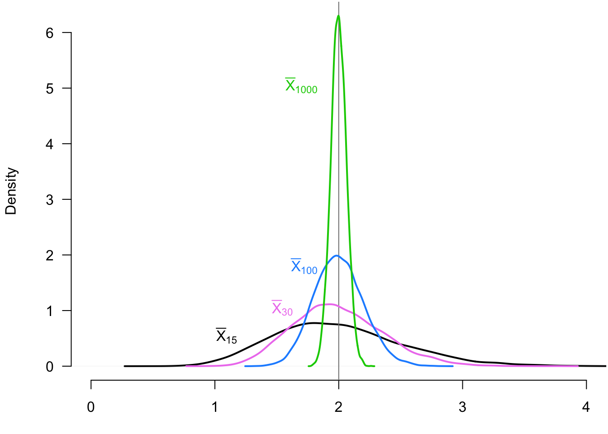
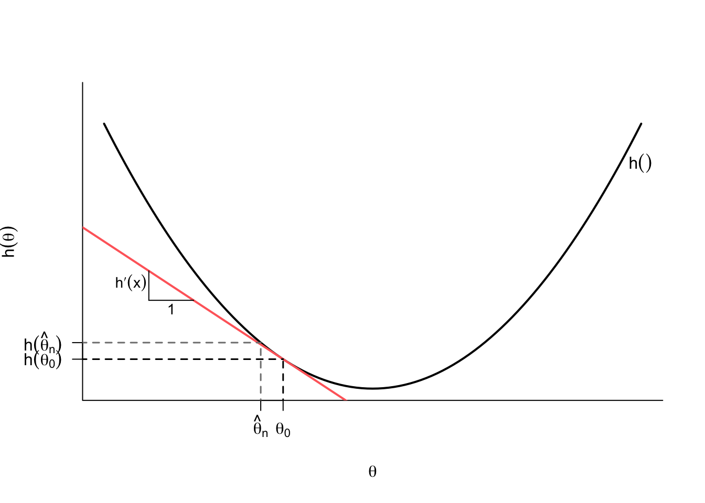

3 Asymptotics
3.1 Introduction
In the last chapter, we defined estimators and started to investigate their finite-sample properties like unbiasedness and the sampling variance. We call these “finite-sample” properties because establishing them generally does not depend on the sample size. We saw that under iid data, the sample mean is unbiased for the population mean, but this result holds as much for \(n = 10\) as it does for \(n = 1,000,000\). But these properties are also of limited use: we only learn the center and spread of the sampling distribution of \(\Xbar_n\) from these results. What about the shape of the distribution? We can often derive the shape if we are willing to make certain assumptions on the underlying data (for example, if the data is normal, then the sample means will be normal as well), but this approach is brittle: if our parametric assumption is false, we’re back to square one.
In this chapter, we’re going to take a different approach and see what happens to the sampling distribution of estimators as the sample size gets large. The study of the estimators as the sample size goes to infinity is called asymptotic theory, but it’s important to understand everything we do with asymptotics will be an approximation. No one ever has infinite data, but we hope that as our samples get larger, the approximations will be closer to the truth. Why work in this asymptopia, though? It turns out that many expressions are much easier to derive in the limit than in finite samples.
3.2 Why convergence with probability is hard
It’s helpful to review the basic idea of convergence in deterministic sequences from calculus:
Definition 3.1 A sequence \(\{a_n: n = 1, 2, \ldots\}\) has the limit \(a\) written \(a_n \rightarrow a\) as \(n\rightarrow \infty\) of \(\lim_{n\rightarrow \infty} a_n = a\) if for all \(\epsilon > 0\) there is some \(n_{\epsilon} < \infty\) such that for all \(n \geq n_{\epsilon}\), \(|a_n - a| \leq \epsilon\).
We say that \(a_n\) converges to \(a\) if \(\lim_{n\rightarrow\infty} a_n = a\). Basically, a sequence converges to a number if the sequence gets closer and closer to that number as the sequence goes on.
Can we apply this same idea to sequences of random variables (like estimators)? Let’s look at a few examples that might help clarify the difficult in doing so.1 Let’s say that we have a sequence of \(a_n = a\) for all \(n\) (that is, a constant sequence). Then obviously \(\lim_{n\rightarrow\infty} a_n = a\). Now let’s say we have a sequence of random variables, \(X_1, X_2, \ldots\), that are all independent with a standard normal distribution, \(N(0,1)\). From the analogy to the deterministic case, it is tempting to say that \(X_n\) converges to \(X \sim N(0, 1)\), but notice that because they are all different random variables, \(\P(X_n = X) = 0\). Thus, we need to be careful about saying how one variable converges to another variable.
Another example highlights subtle problems with a sequence of random variables converging to a single value. Suppose we have a sequence of random variables \(X_1, X_2, \ldots\) where \(X_n \sim N(0, 1/n)\). Clearly, \(X_n\) will be concentrated around 0 for large values of \(n\), so it is tempting to say that \(X_n\) converges to 0. But notice that \(\P(X_n = 0) = 0\) because of the nature of continuous random variables.
3.3 Convergence in probability and consistency
There are several different ways that a sequence of random variance can converge. The first type of convergence deals with sequence converging to a single value.2
Definition 3.2 A sequence of random variables, \(X_1, X_2, \ldots\), is said to converge in probability to a value \(b\) if for every \(\varepsilon > 0\), \[ \P(|X_n - b| > \varepsilon) \rightarrow 0, \] as \(n\rightarrow \infty\). We write this \(X_n \inprob b\).
With deterministic sequences, we said that \(a_n\) converges to \(a\) is it gets closer and closer to \(a\) as \(n\) gets bigger. For convergence in probability, the sequence of random variables converges to \(b\) is the probability that random variables are far away from \(b\) get smaller and smaller as \(n\) gets big.
Notation alert
You will sometimes see convergence in probability written as \(\text{plim}(Z_n) = b\) if \(Z_n \inprob b\), \(\text{plim}\) stands for “probability limit.”
Convergence in probability is incredibly useful for evaluating estimators. While we said that unbiasedness was not the be all and end all of properties of estimators, the following property is a fairly basic and fundamental property that we would like all good estimators to have.
Definition 3.3 An estimator is consistent if \(\widehat{\theta}_n \inprob \theta\).
Consistency of an estimator implies that the sampling distribution of this estimator “collapses” on the true value as the sample size gets large. We say an estimator is inconsistent if it converges in probability to any other value, which is obviously a very bad property of an estimator. It means that as the sample size gets large, the probability that the estimator will be close to the truth will approach 0.
We can also define convergence in probability for a sequence of random vectors, \(\X_1, \X_2, \ldots\), where \(\X_i = (X_{i1}, \ldots, X_{ik})\) is a random vector of length \(k\). This sequence convergences in probbaility to a vector \(\mb{b} = (b_1, \ldots, b_k)\) if and only if each random variable in the vector converges to the corresponding element in \(\mb{b}\), or that \(X_{nj} \inprob b_j\) for all \(j = 1, \ldots, k\).
3.4 Useful inequalities
At first glance, it appears establishing consistency of an estimator will be difficult. How can we know if a distribution will collapse to a specific value without knowing the shape or family of the distribution? It turns out that there are certain relationships between the mean and variance of a random variable and certain probability statements that hold for all distributions (that have finite variance at least). This will be incredibly helpful to us.
Theorem 3.1 (Markov Inequality) For any r.v. \(X\) and any \(\delta >0\), \[ \P(|X| \geq \delta) \leq \frac{\E[|X|]}{\delta}. \]
Proof. Notice that we can let \(Y = |X|/\delta\) and rewrite the statement as \(\P(Y \geq 1) \leq \E[Y]\) (since \(E[|X|]/\delta = \E[|X|/\delta]\) by the properties of expectation), which is what we will show. But notice that \[ \mathbb{1}(Y \geq 1) \leq Y. \] Why does this hold? We can investigate the two possible values of the indicator function to see. If \(Y\) is less than 1, then the indicator function will be 0, but \(Y\) is non-negative so we know that it must be at least as big as 0 so that inequality holds. If \(Y \geq 1\) then the indicator function 1 but we just said that \(Y \geq 1\) so the inequality holds. If we take the expectation of both sides of this inequality, we obtain the result (remember the expectation of an indicator function is the probability of the event being indicated).
In words, Markov’s inequality says that the probability of a random variable being large in magnitude cannot be high if the average is not large in magnitude. Blitzstein and Hwang 2019) provide a nice intuition behind this result. Let \(X\) be the income of a randomly selected individual in a population and set \(\delta = 2\E[X]\), so that the inequality becomes \(\P(X > 2\E[X]) < 1/2\) (assuming that all income is nonnegative). Here, the inequality says that the share of the population that has an income twice the average must be less than 0.5, since if more than half the population was making twice the average income then the average would have to be higher.
It’s quite astounding how general this result is since it holds for all random variables. Of course, its generality comes at the expense of not being very informative. If \(\E[|X|] = 5\), for instance, the inequality tells us that \(\P(|X| \geq 1) \leq 5\) which is not very helpful since we already know that probabilities are less than 1! If we are willing to make some assumptions about \(X\), we can get tighter bounds.
Theorem 3.2 (Chebyshev Inequality) Suppose that \(X\) is r.v. for which \(\V[X] < \infty\). Then, for every real number \(\delta > 0\), \[ \P(|X-\E[X]| \geq \delta) \leq \frac{\V[X]}{\delta^2}. \]
Proof. To prove this, we only need to square both sides of the inequality inside the probability statement and apply Markov’s inequality: \[ \P\left( |X - \E[X]| \geq \delta \right) = \P((X-\E[X])^2 \geq \delta^2) \leq \frac{\E[(X - \E[X])^2]}{\delta^2} = \frac{\V[X]}{\delta^2}, \] with the last equality holding by the definition of variance.
This is a straightforward extension of the Markov result: the probability of a random variable being far away from its mean (that is, \(|X-\E[X]|\) being large) is limited by the variance of the random variable. If we let \(\delta = c\sigma\), where \(\sigma\) is the standard deviation of \(X\), then we can use this result to bound the normalized: \[ \P\left(\frac{|X - \E[X]|}{\sigma} > c \right) \leq \frac{1}{c^2}. \] This says that the probability of being, say, 2 standard deviations away from the mean must be less than 1/4 = 0.25. Notice that this bound can be quite wide. If \(X\) is normally distributed, then we know that just about 5% of draws will be greater than 2 SDs away from the mean, which is much lower than the 25% bound implied by Chebyshev’s inequality.
3.5 The law of large numbers
We can now use these inequalities to show how certain estimators are consistent for certain quantities of interest. Why are these inequalities useful for this purpose? Remember that convergence in probability was about the probability of an estimator being far away from a value going to zero. Chebyshev’s inequality shows that we can bound these exact probabilities.
The most famous consistency result has a special name.
Theorem 3.3 (Weak Law of Large Numbers) Let \(X_1, \ldots, X_n\) be a an i.i.d. draws from a distribution with mean \(\mu = \E[X_i]\) and variance \(\sigma^2 = \V[X_i] < \infty\). Let \(\Xbar_n = \frac{1}{n} \sum_{i =1}^n X_i\). Then, \(\Xbar_n \inprob \mu\).
Proof. Recall that the sample mean is unbiased, so \(\E[\Xbar_n] = \mu\) with sampling variance \(\sigma^2/n\). We can then simply apply Chebyshev to the sample mean to get \[ \P(|\Xbar_n - \mu| \geq \delta) \leq \frac{\sigma^2}{n\delta^2} \] An \(n\rightarrow\infty\), the right-hand side goes to 0 which means that the left-hand side also must go to 0 which is the definition of \(\Xbar_n\) converging in probability to \(\mu\).
The weak law of large numbers (WLLN) shows that, under general conditions, the sample mean gets closer to the population mean as \(n\rightarrow\infty\). In fact, this result holds even when the variance of the is infinite, though that’s a situation that most analysts will rarely face.
Note
The naming of the “weak” law of large numbers seems to imply the existence of a “strong” law of large numbers (SLLN) and this is true. The SLLN states that the sample mean converges to the population mean with probability 1. This type of convergence, called almost sure convergence, is stronger than convergence in probability which only says that the probability of the sample mean being close to the population mean converges to 1. While it is nice to know that this stronger form of convergence holds for the sample mean under the same assumptions, it is very rare for folks outside of theoretical probability and statistics to need to rely on almost sure convergence.
Example 3.1 It can be helpful to see how the distribution of the sample mean changes as a function of the sample size to appreciate the WLLN. We can show this by taking repeated iid samples of different sizes from an exponential rv with rate 0.5 so that \(\E[X_i] = 2\). In Figure 3.1, we show the distribution of the sample mean (across repeated samples) when the sample size is 15 (black), 30 (violet), 100 (blue), and 1000 (green). What we can see is how the distribution of the sample mean is “collapsing” on the true population mean, 2. The probability of being far away from 2 becomes progressively smaller.
The WLLN also holds for random vectors in addition to random variables. Let \((\X_1, \ldots, \X_n)\) be an iid sample of random vectors of length \(k\), \(\mb{X}_i = (X_{i1}, \ldots, X_{ik})\). We can define the vector sample mean as just the vector of sample means for each of the entries:
\[ \overline{\mb{X}}_n = \frac{1}{n} \sum_{i=1}^n \mb{X}_i = \begin{pmatrix} \Xbar_{n,1} \\ \Xbar_{n,2} \\ \vdots \\ \Xbar_{n, k} \end{pmatrix} \] Since this is just a vector of sample means, each random variable in the random vector will converge in probability to the mean of that random variable. Fortunately, this is the exact definition of convergence in probability for random vectors. We formally write this in the following theorem.
Theorem 3.4 If \(\X_i \in \mathbb{R}^k\) are iid draws from a distribution with \(\E[X_{ij}] < \infty\) for all \(j=1,\ldots,k\) then as \(n\rightarrow\infty\)
\[ \overline{\mb{X}}_n \inprob \E[\X] = \begin{pmatrix} \E[X_{i1}] \\ \E[X_{i2}] \\ \vdots \\ \E[X_{ik}] \end{pmatrix}. \]
Notation alert
You will have noticed that many of the formal results we have presented so far have “moment conditions” that certain moments are finite. For the vector WLLN, we saw that applied to the mean of each variable in the vector. Some books use a short hand for this: \(\E\Vert \X_i\Vert < \infty\), where \[ \Vert\X_i\Vert = \left(X_{i1}^2 + X_{i2}^2 + \ldots + X_{ik}^2\right)^{1/2}. \] This is slightly more compact notation, but why does it work? One can show that this function, called the Euclidean norm or \(L_2\)-norm is a convex function, so we can apply Jensen’s inequality to show that: \[ \E\Vert \X_i\Vert \geq \Vert \E[\X_i] \Vert = (\E[X_{i1}]^2 + \ldots + \E[X_{ik}]^2)^{1/2}. \] So if \(\E\Vert \X_i\Vert\) is finite, it means that all the component means are finite otherwise the right-hand side of the previous equation would be infinite.
3.6 Consistency of estimators
The WLLN shows that the sample mean of iid draws is consistent for the population mean, which is a massive result given that so many estimators can be written as sample means. What about other estimators? The proof of the WLLN points to one way to determine if an estimator is consistent: if it is unbiased and the sampling variance shrinks as the sample size grows. The next theorem
Theorem 3.5 For any estimator \(\widehat{\theta}_n\), if \(\text{bias}[\widehat{\theta}_n] \to 0\) and \(\V[\widehat{\theta}_n] \rightarrow 0\) as \(n\rightarrow \infty\), then \(\widehat{\theta}_n\) is consistent.
Thus, if we can characterize the bias and sampling variance of an estimator, then we should be able to tell if it consistent or not. This is handy since working with the kinds of probability inequalities used for the WLLN can sometimes be quite confusing.
What do we do if it is difficult or impossible to characterize the bias? Consider a plug-in estimator like \(\widehat{\alpha} = \log(\Xbar_n)\) where \(X_1, \ldots, X_n\) are iid from a population with mean \(\mu\). We know that for nonlinear functions like logarithms we have \(\log\left(\E[Z]\right) \neq \E[\log(Z)]\), so \(\E[\widehat{\alpha}] \neq \log(\E[\Xbar_n])\) and the plug-in estimator will be biased for \(\log(\mu)\). It will also be difficult to obtain an expression for the bias in terms of \(n\). Is all hope lost here? Must we give up on consistency? No, and in fact, consistency will be much simpler to show in this setting.
Theorem 3.6 (Properties of convergence in probability) Let \(X_n\) and \(Z_n\) be two sequences of random variables such that \(X_n \inprob a\) and \(Z_n \inprob b\), and let \(g(\cdot)\) be a continuous function. Then,
- \(g(X_n) \inprob g(a)\) (continuous mapping theorem)
- \(X_n + Z_n \inprob a + b\)
- \(X_nZ_n \inprob ab\)
- \(X_n/Z_n \inprob a/b\) if \(b > 0\).
We can now see that many of the nasty problems with expectations and nonlinear functions are made considerably easier with convergence in probability in the asymptotic setting. So while we know that \(\log(\Xbar_n)\) is biased for \(\log(\mu)\), we know that it is consistent since \(\log(\Xbar_n) \inprob \log(\mu)\) because \(\log\) is a continuous function.
Example 3.2 Suppose we implemented a survey by randomly selecting a sample from the population of size \(n\), but not everyone responded to our survey. Let the data consist of pairs of random variables, \((Y_1, R_1), \ldots, (Y_n, R_n)\), where \(Y_i\) is the question of interest and \(R_i\) is a binary indicator for if the respondent answered the question (\(R_i = 1\)) or not (\(R_i = 0\)). Our goal is to estimate the mean of the question for responders: \(\E[Y_i \mid R_i = 1]\). We can use the law of iterated expectation to which we can rewrite as \[ \begin{aligned} \E[Y_iR_i] &= \E[Y_i \mid R_i = 1]\P(R_i = 1) + \E[ 0 \mid R_i = 0]\P(R_i = 0) \\ \implies \E[Y_i \mid R_i = 1] &= \frac{\E[Y_iR_i]}{\P(R_i = 1)} \end{aligned} \]
The relevant estimator for this quantity is the mean of the of the outcome among those who responded, which is slightly more complicated than a typical sample mean because the denominator is a random variable: \[ \widehat{\theta}_n = \frac{\sum_{i=1}^n Y_iR_i}{\sum_{i=1}^n R_i}. \] Notice that this estimator is the ratio of two random variables. The numerator has mean \(n\E[Y_iR_i]\) and the denominator has mean \(n\P(R_i = 1)\). It is then tempting to say that we can take the ratio of these means as the mean of \(\widehat{\theta}_n\), but expectations are not preserved in nonlinear functions like this one.
We can establish consistency of our estimator, though, by noting that we can rewrite the estimator as a ratio of sample means \[ \widehat{\theta}_n = \frac{(1/n)\sum_{i=1}^n Y_iR_i}{(1/n)\sum_{i=1}^n R_i}, \] where by the WLLN the numerator \((1/n)\sum_{i=1}^n Y_iR_i \inprob \E[Y_iR_i]\) and the denominator \((1/n)\sum_{i=1}^n R_i \inprob \P(R_i = 1)\). Thus, by Theorem 3.6, we have \[ \widehat{\theta}_n = \frac{(1/n)\sum_{i=1}^n Y_iR_i}{(1/n)\sum_{i=1}^n R_i} \inprob \frac{\E[Y_iR_i]}{\P[R_i = 1]} = \E[Y_i \mid R_i = 1] \] so long as the probability of responding is greater than zero. This establishes that our sample mean among responders while biased for the conditional expectation among responders, it is consistent for that quantity.
It is very important to keep the difference between unbiased and consistent clear in your mind. There are very many silly unbiased estimators that are inconsistent. Let’s go back to our iid sample, \(X_1, \ldots, X_n\) from a population with \(E[X_i] = \mu\). There is nothing in the rule book against defining an estimator \(\widehat{\theta}_{first} = X_1\) that just uses the first observation as the estimate. This seems like an obviously silly estimator, but it is actually unbiased since \(\E[\widehat{\theta}_{first}] = \E[X_1] = \mu\). It is inconsistent since the sampling variance of this estimator is just the variance of the population distribution, \(\V[\widehat{\theta}_{first}] = \V[X_i] = \sigma^2\), which does not change as a function of the sample size. Generally speaking, we can regard “unbiased, but inconsistent” estimators as silly and not worth our time (along with bias and inconsistent estimators).
There are also estimators that are biased but consistent that are often much more interesting. We already saw one such estimator in Example 3.2, but there are many more. Maximum likelihood estimators, for example, are (under some regularity conditions) consistent for the parameters of a parametric model, but they are often biased.
Example 3.3 (Plug-in variance estimator) Last chapter, we introduced the plug-in estimator for the population variance, \[ \widehat{\sigma}^2 = \frac{1}{n} \sum_{i=1}^n (X_i - \Xbar_n)^2, \] which we will now show is biased but consistent. To see the bias note that we can rewrite the sum of square deviations \[\sum_{i=1}^n (X_i - \Xbar_n)^2 = \sum_{i=1}^n X_i^2 - n\Xbar_n. \] Then, the expectation of the plug-in estimator is \[ \begin{aligned} \E[\widehat{\sigma}^2] & = \E\left[\frac{1}{n}\sum_{i=1}^n X_i^2\right] - \E[\Xbar_n^2] \\ &= \E[X_i^2] - \frac{1}{n^2}\sum_{i=1}^n \sum_{j=1}^n \E[X_iX_j] \\ &= \E[X_i^2] - \frac{1}{n^2}\sum_{i=1}^n \E[X_i^2] - \frac{1}{n^2}\sum_{i=1}^n \sum_{j\neq i} \underbrace{\E[X_i]\E[X_j]}_{\text{independence}} \\ &= \E[X_i^2] - \frac{1}{n}\E[X_i^2] - \frac{1}{n^2} n(n-1)\mu^2 \\ &= \frac{n-1}{n} \left(\E[X_i^2] - \mu^2\right) \\ &= \frac{n-1}{n} \sigma^2 = \sigma^2 - \frac{1}{n}\sigma^2 \end{aligned}. \] Thus, we can see that the bias of the plug-in estimator is \(-(1/n)\sigma^2\) so it slightly underestimates the variance. Nicely, though, the bias shrinks as a function of the sample size, so according to Theorem 3.5 it will be consistent so long as the sampling variance of \(\widehat{\sigma}^2\) shrinks as a function of the sample size, which it does (though omit that proof here). Of course, simply multiplying this estimator by \(n/(n-1)\) will give an unbiased and consistent estimator that is also the typical sample variance estimator.
3.7 Convergence in distribution and the central limit theorem
Convergence in probability and the law of large numbers are very useful for understanding how our estimators will (or will not) collapse to their estimand as the sample size increases. But what about the shape of the sampling distribution of our estimators? For the purposes of statistical inference, we would like to be able to make probability statements such as \(\P(a \leq \widehat{\theta}_n \leq b)\). These types of statements will be the basis of hypothesis testing and confidence intervals. But in order make those types of statements, we need to know the entire distribution of \(\widehat{\theta}_n\), not just the mean and variance. Luckily, there are established results that will allow us to approximate the sampling distribution of a huge swath of estimators when our sample sizes are large.
To see how we will develop these approximations, we need to first describe a weaker form of convergence to a distribution rather than to a single value.
Definition 3.4 Let \(X_1,X_2,\ldots\), be a sequence of r.v.s, and for \(n = 1,2, \ldots\) let \(F_n(x)\) be the c.d.f. of \(X_n\). Then it is said that \(X_1,X_2, \ldots\) converges in distribution to r.v. \(X\) with c.d.f. \(F(x)\) if \[ \lim_{n\rightarrow \infty} F_n(x) = F(x), \] for all values of \(x\) for which \(F(x)\) is continuous. We write this as \(X_n \indist X\) or sometimes \(X_n ⇝ X\).
Essentially, convergence in distribution means that as \(n\) gets large, the distribution of \(X_n\) becomes more and more similar to the distribution of \(X\), which we often call the asymptotic distribution of \(X_n\) (other names include the large-sample distribution). If we know that \(X_n \indist X\), then we can use the distribution of \(X\) as an approximation to the distribution of \(X_n\) and that distribution can be fairly accurate.
One of the most remarkable results in probability and statistics is that a large class of estimators will converge in distribution to one particular family of distributions: the normal. This is one reason that we study the normal so much and why investing in building intuition about it will pay off across many domains of applied work. We call this broad class of results the “central limit theorem,” (CLT) but it would probably be more accurate to refer to them as “central limit theorems” since much of statistics is devoted to showing the result in different settings. We now present the simplest CLT for the sample mean.
Theorem 3.7 (Central Limit Theorem) Let \(X_1, \ldots, X_n\) be i.i.d. r.v.s from a distribution with mean \(\mu = \E[X_i]\) and variance \(\sigma^2 = \V[X_i]\). Then if \(\E[X_i^2] < \infty\), we have \[ \frac{\Xbar_n - \mu}{\sqrt{\V[\Xbar_n]}} = \frac{\sqrt{n}\left(\Xbar_n - \mu\right)}{\sigma} \indist \N(0, 1). \]
In words: the sample mean of a random sample from a population with finite mean and variance will be approximately normally distributed in large samples. Notice how we have not made any assumptions about the distribution of the underlying random variables, \(X_i\). They could binary, event count, continuous, anything. This means the CLT is incredibly broadly applicable.
Notation alert
Why do we state the CLT in terms of the sample mean after centering and scaling by its standard error? If we don’t normalize the sample mean in this way, it’s difficult to talk about convergence in distribution because we know from the WLLN that \(\Xbar_n \inprob \mu\) so in the limit the distribution of \(\Xbar_n\) is concentrated at point mass around that value. Normalizing by centering and rescaling ensures that the variance of the resulting quantity will be fixed as a function of \(n\), so it makes sense to talk about its distribution converging. Sometimes you will see the equivalent result as \[ \sqrt{n}\left(\Xbar_n - \mu\right) \indist \N(0, \sigma^2). \]
We can use this result to state approximations that we can use when discussing estimators such as \[ \Xbar_n \overset{a}{\sim} N(\mu, \sigma^2/n), \] where we use \(\overset{a}{\sim}\) to be “approximately distributed as in large samples.” This allow us to say things like: “in large samples, we should expect the sample mean to between within \(2\sigma/\sqrt{n}\) of the true mean in 95% of repeated samples.” As you might guess, this will be very important for hypothesis tests and confidence intervals! Estimators so often follow the CLT that we have an expression for this property.
Definition 3.5 An estimator \(\widehat{\theta}_n\) is asymptotically normal if for some \(\theta\) \[ \sqrt{n}\left( \widehat{\theta}_n - \theta \right) \indist N\left(0,\V[\widehat{\theta}_n]\right). \]
Example 3.4 To illustrate how the CLT works, we can simulate the sampling distribution of the (normalized) sample mean at different sample sizes. Let \(X_1, \ldots, X_n\) be iid samples from a Bernoulli with probability of success 0.25. We then draw repeated samples of size \(n=30\) and \(n=100\) and calculate \(\sqrt{n}(\Xbar_n - 0.25)/\sigma\) for each random sample. Figure 3.2 plots the density of these two sampling distributions along with a standard normal reference. We can see that even at \(n=30\), the rough shape of the density looks normal, with spikes and valleys due to the discrete nature of the data (the sample mean can only take on 31 possible values in this case). By \(n=100\), the sampling distribution is very close to the true standard normal.

There are several properties of convergence in distribution that are helpful to us.
Theorem 3.8 (Properties of convergence in distribution) Let \(X_n\) be a sequence of random variables \(X_1,X_2,\ldots\) that converges in distribution to some rv \(X\) and let \(Y_n\) be a sequence of random variables \(Y_1,Y_2,\ldots\) that converges in probability to some number, \(c\). Then,
- \(g(X_n) \indist g(X)\) for all continuous functions \(g\).
- \(X_nY_n\) converges in distribution to \(cX\)
- \(X_n + Y_n\) converges in distribution to \(X + c\)
- \(X_n / Y_n\) converges in distribution to \(X / c\) if \(c \neq 0\)
The last 3 of these results are sometimes referred to as Slutsky’s theorem. These results are very commonly used when trying to determine the asymptotic distribution of an estimator.
One important application of Slutsky’s theorem is when we replace the (unknown) popoulation variance in the CLT with an estimate. Recall the definition of the sample variance as \[ s^2 = \frac{1}{n-1} \sum_{i=1}^n (X_i - \Xbar_n)^2, \] with the sample standard deviation defined as \(s = \sqrt{s^2}\). It’s easy to show that these are consistent estimators for their respective population parameters \[ s^2 \inprob \sigma^2 = \V[X_i], \qquad s \inprob \sigma, \] which by Slutsky’s theorem implies that \[ \frac{\sqrt{n}\left(\Xbar_n - \mu\right)}{s} \indist \N(0, 1) \] Comparing this result to the statement of CLT, we see that replacing the population variance with a consistent estimate of the variance (or standard deviation) does not affect the asymptotic distribution.
Like with the WLLN, the CLT holds for random vectors of sample means, where their centered and scaled versions converge to a multivariate normal distribution with a covariance matrix equal to covariance matrix of the underlying random vectors of data, \(\X_i\).
Theorem 3.9 If \(\mb{X}_i \in \mathbb{R}^k\) are i.i.d. and \(\E\Vert \mb{X}_i \Vert^2 < \infty\), then as \(n \to \infty\), \[ \sqrt{n}\left( \overline{\mb{X}}_n - \mb{\mu}\right) \indist \N(0, \mb{\Sigma}), \] where \(\mb{\mu} = \E[\mb{X}_i]\) and \(\mb{\Sigma} = \V[\mb{X}_i] = \E\left[(\mb{X}_i-\mb{\mu})(\mb{X}_i - \mb{\mu})'\right]\).
Here, notice that \(\mb{\mu}\) is the vector of population means for all the random variables in \(\X_i\) and \(\mb{\Sigma}\) is the variance-covariance matrix for that vector.
Note
As with the notation alert with the WLLN, we are using a shorthand here, \(\E\Vert \mb{X}_i \Vert^2 < \infty\), which implies that \(\E[X_{ij}^2] < \infty\) for all \(j = 1,\ldots, k\), or equivalently, that the variances of each variable in the sample means has finite variance.
3.8 Delta method
Suppose that we know that an estimator follows the CLT and so we have \[ \sqrt{n}\left(\widehat{\theta}_n - \theta \right) \indist \N(0, V), \] but we actually want to estimate \(h(\theta)\) so we use the plug-in estimator, \(h(\widehat{\theta}_n)\). It seems like we should be able to apply part 1 of Theorem 3.8, the CLT established the large-sample distribution of the centered and scaled random sequence, \(\sqrt{n}(\widehat{\theta}_n - \theta)\), not to the original estimator itself like we would need to investigate the asymptotic distribution of \(h(\widehat{\theta}_n)\). We can use a little bit of calculus to get an approximation to the distribution we need.
Theorem 3.10 If \(\sqrt{n}\left(\widehat{\theta}_n - \theta\right) \indist \N(0, V)\) and \(h(u)\) is continuously differentiable in a neighborhood around \(\theta\), then as \(n\to\infty\), \[ \sqrt{n}\left(h(\widehat{\theta}_n) - h(\theta) \right) \indist \N(0, (h'(\theta))^2 V). \]
It’s useful to understand what’s happening here since it might help give intuition as to when this might go wrong. Why do we focus on continuously differentiable functions, \(h()\)? These are functions that can be well-approximated with a line in a neighborhood around a given point like \(\theta\). In Figure 3.3, we show this where the tangent line at \(\theta_0\), which has slope \(h'(\theta_0)\), is very similar to \(h(\theta)\) for values close to \(\theta_0\). Because of this, we can approximate the difference between \(h(\widehat{\theta}_n)\) and \(h(\theta_0)\) with the what this tangent line would give us: \[ \underbrace{\left(h(\widehat{\theta_n}) - h(\theta_0)\right)}_{\text{change in } y} \approx \underbrace{h'(\theta_0)}_{\text{slope}} \underbrace{\left(\widehat{\theta}_n - \theta_0\right)}_{\text{change in } x}, \] and then multiplying both sides by the \(\sqrt{n}\) gives \[ \sqrt{n}\left(h(\widehat{\theta_n}) - h(\theta_0)\right) \approx h'(\theta_0)\sqrt{n}\left(\widehat{\theta}_n - \theta_0\right). \] The right-hand side of this approximation converges to \(h'(\theta_0)Z\), where \(Z\) is a random variable variable with \(\N(0, V)\). The variance of this quantity will be \[ \V[h'(\theta_0)Z] = (h'(\theta_0))^2\V[Z] = (h'(\theta_0))^2V, \] by the properties of variances.

Example 3.5 Let’s return to the iid sample \(X_1, \ldots, X_n\) with mean \(\mu = \E[X_i]\) and variance \(\sigma^2 = \V[X_i]\). From the CLT, we know that \(\sqrt{n}(\Xbar_n - \mu) \indist \N(0, \sigma^2)\). Suppose that we want to estimate \(\log(\mu)\) so we use the plug-in estimator \(\log(\Xbar_n)\) (assuming that \(X_i > 0\) for all \(i\) so that we can actually take the log). What is the asymptotic distribution of this estimator? This is a situation where \(\widehat{\theta}_n = \Xbar_n\) and \(h(\mu) = \log(\mu)\). From basic calculus we know that \[ h'(\mu) = \frac{\partial \log(\mu)}{\partial \mu} = \frac{1}{\mu}, \] so applying the delta method, we can determine that \[ \sqrt{n}\left(\log(\Xbar_n) - \log(\mu)\right) \indist \N\left(0,\frac{\sigma^2}{\mu^2} \right). \]
Example 3.6 What about if we want to estimate the \(\exp(\mu)\) with \(\exp(\Xbar_n)\)? Recall that \[ h'(\mu) = \frac{\partial \exp(\mu)}{\partial \mu} = \exp(\mu) \] so applying the delta method, we have \[ \sqrt{n}\left(\exp(\Xbar_n) - \exp(\mu)\right) \indist \N(0, \exp(2mu)\sigma^2), \] since \(\exp(\mu)^2 = \exp(2\mu)\).
Like all of the results in this chapter, there is a multivariate version of the delta method that is incredibly useful in practical applications. This is because we often will take two different estimators (or two different estimated parameters) and combine them to estimate another quantity. We now let \(\mb{h}(\mb{\theta}) = (h_1(\mb{\theta}), \ldots, h_m(\mb{\theta}))\) map from \(\mathbb{R}^k \to \mathbb{R}^m\) and be continuously differentiable (we make the function bold since it ). It will help us use more compact matrix notation if we introduce a \(m \times k\) Jacobian matrix of all partial derivatives \[ \mb{H}(\mb{\theta}) = \mb{\nabla}_{\mb{\theta}}\mb{h}(\mb{\theta}) = \begin{pmatrix} \frac{\partial h_1(\mb{\theta})}{\partial \theta_1} & \frac{\partial h_1(\mb{\theta})}{\partial \theta_2} & \cdots & \frac{\partial h_1(\mb{\theta})}{\partial \theta_k} \\ \frac{\partial h_2(\mb{\theta})}{\partial \theta_1} & \frac{\partial h_2(\mb{\theta})}{\partial \theta_2} & \cdots & \frac{\partial h_2(\mb{\theta})}{\partial \theta_k} \\ \vdots & \vdots & \ddots & \vdots \\ \frac{\partial h_m(\mb{\theta})}{\partial \theta_1} & \frac{\partial h_m(\mb{\theta})}{\partial \theta_2} & \cdots & \frac{\partial h_m(\mb{\theta})}{\partial \theta_k} \end{pmatrix}, \] which we can use to generate the equivalent multivariate linear approximation \[ \left(\mb{h}(\widehat{\mb{\theta}}_n) - \mb{h}(\mb{\theta}_0)\right) \approx \mb{H}(\mb{\theta}_0)'\left(\widehat{\mb{\theta}}_n - \mb{\theta}_0\right). \] We can use this fact to derive the multivariate delta method.
Theorem 3.11 Suppose that \(\sqrt{n}\left(\widehat{\mb{\theta}}_n - \mb{\theta}_0 \right) \indist \N(0, \mb{\Sigma})\), then for any function \(\mb{h}\) that is continuously differentiable in a neighborhood of \(\mb{\theta}_0\), we have \[ \sqrt{n}\left(\mb{h}(\widehat{\mb{\theta}}_n) - \mb{h}(\mb{\theta}_0) \right) \indist \N(0, \mb{H}\mb{\Sigma}\mb{H}'), \] where \(\mb{H} = \mb{H}(\mb{\theta}_0)\).
This result follows from the approximation above plus rules about variances of random vectors. Remember that for any compatible matrix of constants, \(\mb{A}\), we have \(\V[\mb{A}'\mb{Z}] = \mb{A}\V[\mb{Z}]\mb{A}'\). You can see that the matrix of constants appears twice here, sort of like the matrix version of “squaring the constant” rule for variance.
The delta method is a very useful for generating closed-form approximations for asymptotic standard errors, but the math is often quite complex for even simple estimators. For applied researchers, it is usually more straightforward to use computational tools like the bootstrap to approximate the standard errors we need. This has the trade-off of taking more computational time to implement than the delta method, but is more easily adaptable across different estimators and domains with little human thinking time.